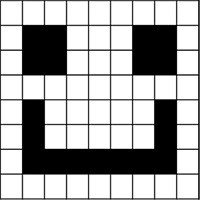
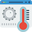

Intro to Computer Systems
Computer Systems is all theory based content. There are 4 sub-topics;
- Data Representation
- Computer Structure
- Environmental Impact
- Security
You will cover binary conversion, how factors affect a systems performance, understanding of the impact intelligent systems can have on environment and the risks and precautions that affect computer systems.
Data Representation
Computers store data as a series of 1's and 0's called Binary. This is because a processor is only capable of processing 1's and 0's, or On or Off.
1 represents On, and 0 represents Off.
Us humans use the denary (otherwise known as decimal) system in which we have 10 numbers to use; 0,1,2,3,4,5,6,7,8,9. To use and understand binary we must know how the binary system works.
| 128 | 64 | 32 | 16 | 8 | 4 | 2 | 1 | Denary |
| 0 | 0 | 0 | 0 | 0 | 0 | 0 | 0 | Binary |
From the table above you can see that the denary numbers double each time as they move from left to right. This can continue so we can have larger numbers, for now we will stick to 8-bit numbers
Positive Numbers
To represent a positive number in binary we must understand how a binary sequence works.
01010100
The above binary is the number 84, but how?
We take each binary digit starting from left to right and above each digit put a number above it - the value of the number is always double of the number to its left.

As you can see, we have a 1 under the following values; 64, 16, and 4. Adding these numbers together we get 84
Interactive Binary
Enter either a 1 or a 0 into the box to see what the denary is:
| 128 | 64 | 32 | 16 | 8 | 4 | 2 | 1 |
Total: 0
0
Floating Point Representation
At some point we need to store numbers that include a decimal. Just like in Physics and Maths, we learn about scientific notiation where we take a very large number or a very small number with a decimal point and use standard form to write them out.
We use the same format in computing science; we call this "floating point representation". Floating point representation is broken into 3 parts; sign, mantissa and exponent.
Lets look at an example. If we needed to write 13.5 using float point representation we would have to do the following:
- Count how many times we need to move the decimal so that it is before the first whole number: This would be 2. Since we moved the decimal 2 places to the left, the exponent is 2, or in 8 bit binary, 0000 0010.
- Now we are left with .135, of which we need to convert to binary. 135 in 8 bit binary is 1000 0111, but the mantissa might be asked to be written in 16 bit (1 bit for the sign)
- Expand mantissa to 16bit (1 bit for sign) so we add in 0's to the right 1000 0111 0000 000
- Finally, we need to determine the sign bit, this part is easy. If the decimal was moved to the left, then the sign is positive and therefore 0. If the decimal was moved to the right, then the sign is negative and therefore 1.
| Sign (1 bit) | Mantissa (15 bit) | Exponent (8 bit) |
| 0 | 1000 0111 0000 000 | 0000 0010 |
Two's Complement
Two's Completement is how we represent negative numbers using binary.
Lets look at an example. If we needed to write -20 using Two's Complement we would have to do the following:
1. Write 20 in 8 bit binary:
0001 0100
2. Starting from the right, find the first bit that is a 1.
0001 0100
3. Now, every bit after this bit will be inverted;
1110 1100
Storing Text / Extended ASCII
Text also needs to be represented in computer systems using the binary system, however there is a middle ground where the binary for each printable character (and non-printable characters) will be assigned a numerical/denary value of which we then get the binary value.
The the system that is used world wide to represent text is called ASCII (American Standard Code Information Interchange). We use Extended ASCII to represent text as it uses 8 bit binary allowing us to use a total of 256 different codes. These codes are then used to represent the characters.
There are printable characters, and non printable characters. There are 32 non-printable characters, which are called 'control characters' and these are keys on a keyboard that do not print anything on the screen such as "Enter", "CTRL", "SHIFT", the arrow keys and more. The other printable characters are the Alphabet in both lowercase and uppercase, symbols, and numbers. Here are some examples:
| Extended ASCII | Denary Equivalent | Character | 01000001 | 65 | A |
|---|---|---|
| 01000010 | 66 | B |
| 01000011 | 67 | C |
| 00011011 | 27 | ESCAPE |
| 00100000 | 32 | SPACE |
| 001000001 | 33 | ! |
Storing Graphics
Vector Images
Vector images are stored by layering shapes on top of eachother. These shapes are stored as a list attributes including coordinates, type of shape, start position, size, colour or pattern of its fill and outline and more.
These attributes are read and translated into bitmap images on the screen.
<rect x="1" y="1" width="250" height="100" style="fill:#0cf; stroke-width:2; stroke:#000">
Important notes:
- Small file size (unless highly complex shapes and high number of layers)
- Resolution independant so they can be scaled without losing quality
- Can be edited an unlimited amount of times without impacting image quality
- Cannot be used for photographs/life like images
Bitmap Graphics
Bitmapped graphics are made up using pixels. Each pixel is given a location and colour - if the bitmap is using 8bit colour then the each pixel can be 1 of 256 colours - which is not enough to accurately represent colour that we see. So increasing the bits to 24 now gives each pixel the ability to be 1 of 16~ million different colours.
If we break down the word bitmap, we have bit and map. Essentially a bitmap is a map of bits - lets look at the image example below
If we imagine that each bitmap image is simply a grid of pixels, and each pixel is given a binary number based on what colour that pixel should be, we can see this in the image above. Starting at the top left and working our way down to the bottom right, each pixel is told what to do - in this example, the pixels are told to be either on or off (1 = On, 0 = Off). Which gives us a very simple, 1 bit image.
Lets increase the number of pixels as well as the number of colours each pixel can be:
Important notes:
- Perfect for capturing photographs
- Resoultion dependant meaning once the image is created, its resolution is set
- Large file size since all pixels colour depth are stored (no compression)
- Can be compressed using lossy or lossless codec reducing file size
Computer Structure
The Processor
The processor is the brains of the computer. It does all the moving and processing of data, and does this at rates of millions of instructions
per second. The clock speed is measured in Hertz (Hz) and is a good indication of how quickly the processor can complete tasks. Modern processors for desktop PC’s operate in GHz.
It is made up of 3 important components;
- Control Unit
- Arithmetic and Logic Unit
- Registers
Arithmetic and Logic Unit
The Arithmetic and Logic unit (ALU) is the part of the processor that deals with all of the calculations. Example: total = cost * quantity. It also deals with all of the logical operations too, for example IF age > 17 THEN
Control Unit
The Control Unit (CU) is the part of the processor that performs a number of functions. One of the many functions is to decode and execute the instructions, another is to is to keep the components in time with each other using the clock line. The Control Unit also initiates the memory accesses using the read or write line.
Registers
The Registers are storage locations that are located ON the processor itself. They are used to:
- store data that is being transferred to or from memory
- hold the address of the location in memory which the processor is accessing to read or write data
- hold the instructions that are being carried out
Computer Memory
Main Memory in a computer is either RAM or ROM. RAM (Random Access Memory) is where programs and data is held when they are in use by the computer. ROM (Read Only Memory) is system memory that is used to store vital information such as start up instructions. This data can not be edited or deleted and is not lost when the power is off.
RAM- The processor can write to, or read from the RAM at high speed
- Data held in RAM can be changed
- All data in RAM is lost when the power is switched off
- RAM holds all the data for files and programs currently being used
- Each memory location in RAM has its own unique address
- Data is stored pernamently in ROM - it is not lost when the power is switched off
- Data in ROM can not be changed
- ROM holds vital system information
Buses
Buses are a series of lines that connect the processor to other parts of computer architecure (cache memory, main memory) and they transmit data between these parts. There are 2 buses; Data Bus and Address Bus
Data BusThe Data Bus is used to transfer data to and from main memory to the processor. The data bus is bi-directional, meaning it can transfer data both ways.
Address BusThe Address Bus simply carries the address of the memory location of the data that is either being read from or written to in main memory. The Address Bus is uni-directional, meaning it can only travel in one direction; from CPU to the main memory.
The Buses in a computer can determine how efficiently it can run; the width of the bus impacts how much data can be transferred at a time. For example; a 32bit bus will be able to transfer 32bits at once, increasing the width will increase the efficiency and performance of the computer.
Machine Code
At this point we should know that computers only understand 1's and 0's (Binary). However, it is very difficult for humans to read and write instructions in Binary so we use High Level Languages such as Python, Visual Basic, C++ etc. These High Level Languages then need to be translated into machine code so that the computer/processor can execute the instructions.
Translators
As previously discussed, we need to translate our high level language code into machine code so that the computer can execute the instructions we give it.
There are 2 different types of translators that you need to know about:
- Interpreter
- Compiler
Each have their own advantages and disadvantages
InterpreterAn interpreter will translate the code line by line. It does not produce object code, which is a saved version of the program in machine code. Instead it will translate and execute it each line in the program everytime the program is run.
CompilerA compiler will take the whole program, translate it into machine code, object code. This is done line by line, and then creates a file with the translated code. The machine code can then be executed.
Environmental Impact
Computers have a big impact on the environment due to the energy used to produce and run the every incresing number of computer systems comes from non-renewable energy sources.
We can change a few settings and adjust the way we use computer systems to reduce the amount of energy consumed;
- Reduce brightness on monitors
- Powerdown settings - computers can turn off automatically at a scheduled time, this is useful in workplaces where workers might all leave at the end of the day and this ensures all computers are not left on
- Leaving computers on standby if the computer is to be used later on. On standby a computer will use up to 10x less power when in standby mode
Computer systems are a huge source of emissions and have a huge impact on the environment. However, they are increasingly being used to save energy by controlling our environment.
Heating Systems
Technology can be used to monitor and adjust heating systems based on data collected so that the heating can be turned on and off at the most efficient times. Intelligent Heating Systems will collect data and monitor temperatures to make decisions on where to turn on and shut off the heating systems, saving money and most importantly, energy.
These systems can also monitor the activity of rooms and determine when certain rooms should be heated. Another instance of intelligent heating systems is the ability for the heating system to turn on when a room is booked out, so it can know when people are scheduled to be in a particular room and when the room will also be likely be vacant.
Traffic Control
Another situation where technology and intelligent systems can be used is for traffic management. Vehicles of all shapes and sizes are more efficient when they are travelling. Once they start breaking, accelerating or are stationary (with the engine running), they are produce more emissions.
By analysing the times when there is a lot more traffic and from where this influx of traffic comes from, the system can change the timing of traffic lights to allow more cars through a certain route to ensure there are less cars stuck in traffic, which inturn reduces the amount of cars that are stationary, and therefore reducing emissions.
Modern satellite navigation systems can warn drivers of potential congestion and suggest alternative routes - again, reducing the potential for cars to sit stationary and reducing the emissions.
Car Management Systems
The majority of modern cars are fitted with an engine management system. This management system, along with hundreds of sensors, can process 1000's of readings a second and make small adjustments to the engine to improve efficiency, which in turn, reduces the emissions produced.
Start/Stop systems are designed to switch the cars engine off when stationary at a set of traffic lights, or just parked up. Having the engine off for a matter of seconds to minutes can save the amount of emissions produced and therefore improving the efficiency of the car. Multiplying this to the hundreds of millions of car across the planet can add up to a significant amount of emissions and carbon dioxide reduced. When the driver wants to move again, they press the accelerator pedal and the car will restart automaticaly.
Security Risks and Precautions
Firewalls
A firewall is designed to check all incoming and outgoing data of a computer system. The firewall decides which packets of data of allowed to reach their desintation address.
A firewalla can be installed on;
- an individual machine
- servers on a network
A firewall's purpose is to prevent unauthorised access to a network, otherwise known as hacking - it will not prevent viruses, trojans or malware.
Encryption
Encryption is a way of scrambling information so that it is unreadable to those who are not authorised to read the information. Encryption is essential and without it we wouldn't be able to log into our banks, having online shopping or communicate without someone else being able to see our password, sensitive date and messages.
Higher: Asymetric Encryption.
In Asymetric Encryption, everyone on the internet has their own public and private key pair that are mathematically linked. The public key can be used by anyone to encrypt information but the private key is only known and held by the recipient. Once the sender has sent their information that was encrypted using the public key, the recipient then uses their priate key to decrypt the information.
It is not possible to figure out the private key by using the public key.
Computer Misuse Act
in 1990, the UK parliament created and implemented a law which can now be used to prosecute people for the following offences;
- Gaining unauthorised access to computer systems and material, either through hacking or gaining direct physical access to a computer.
- Gaining access with the intent to commit further offences, such as using the stolen information to commit blackmail or fraud.
- Unauthorised modifying of data or software on a computer system.
Tracking Cookies
Tracking Cookies are small, plain text files that are stored within your browser whenever you access a website that has cookies enabled. When you revisit a website, you computer/browser sends this cookie to the webserver so that the website can send you a more personalised browsing experience.
Cookies may be used to store the following:
- Login details to log you back into a website.
- Session details such as remembering the contents of your basket for online shopping.
- Browsing behaviour such as websites you've visited or other products you have looked at.
As this information is sent from your computer to the websites server, if these information was sent without any encryption then unauthorised access to this sensitive data is possible. Cookies should only be sent if the website is using a secure connection such as HTTPS (Hypertext Transfer Protocol Secure)
Denial of Service Attack
A Denial of Service attack, otherwise know as a DoS attack, is an attack on a website/server by overloading the servers capabilities with the intention of preventing legitimate users from accessing the website
Attacks may involve:
- Bandwidth Consumption - overloading the bandwidth of the network connection
- Resource Starvation - causing so many processes to run simultaneously that systems become starved of resources (memory, processor time)
- DNS Attack - hampering access to a domain name server (DNS), the system that converts web address requests into IP addresses required to direct your internet connection to a required website
Symptoms of a DoS attack include - inability to access a system or experiencing extremely slow performance. For a company, this may result in lost revenue and unexpected costs required to resolve the attack.